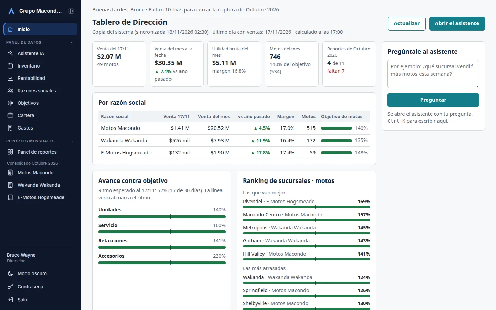
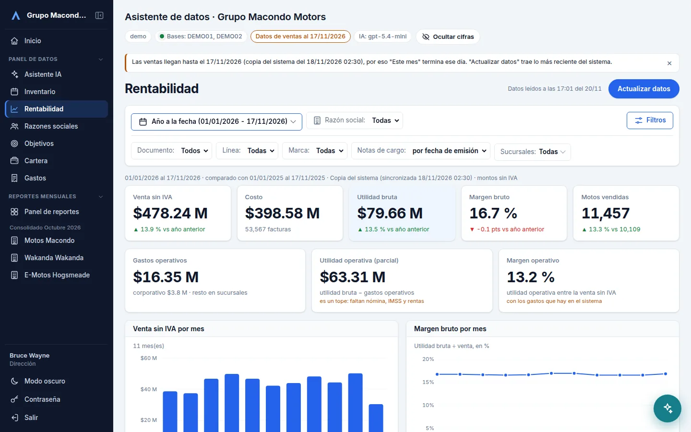
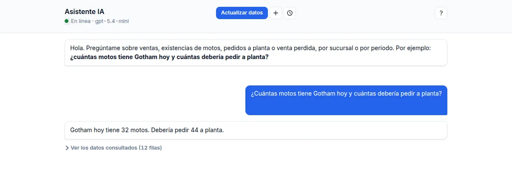
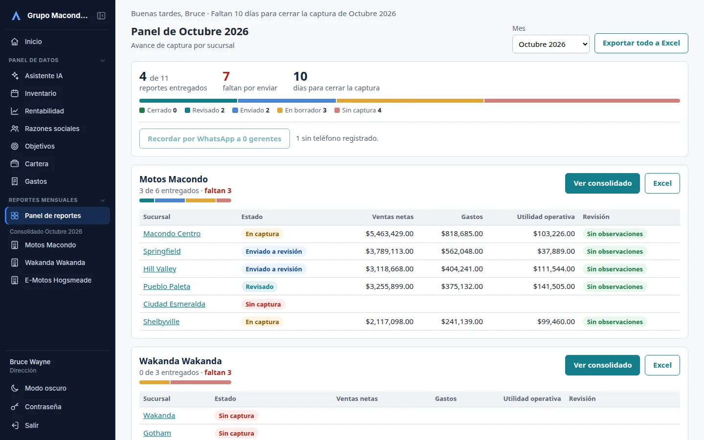
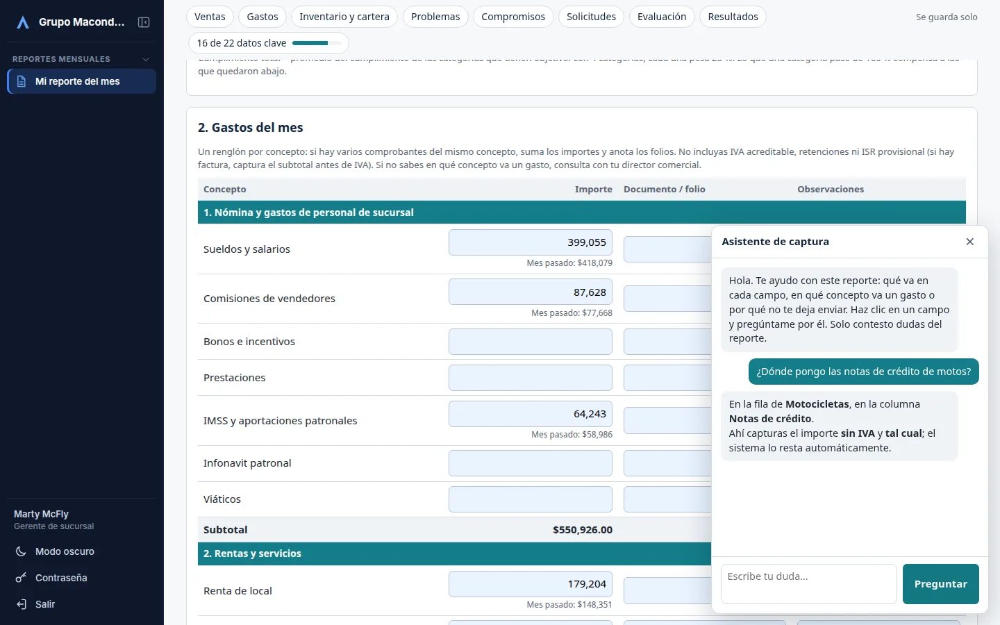

El reto
Grupo AG opera 23 sucursales repartidas en 5 razones sociales (Honda Motos GT y otras marcas). Las ventas, el inventario y la cartera viven en el ERP Adaflex, y el reporte mensual de cada sucursal se armaba aparte, en hojas de cálculo.
El objetivo era que dirección, gerentes y jefes de área vieran la misma información, al día, cada quien con lo que le corresponde, sin cargar el servidor del ERP que usan las sucursales todo el día.
Qué construí
ETLExtracción de dos bases Firebird del ERP a PostgreSQL: copia nocturna completa y copia rápida bajo demanda, con consultas probadas para no saturar el servidor de producción.
Reportes mensualesCada gerente captura el reporte de su sucursal con validaciones al momento; Administración lo revisa o lo devuelve y Dirección cierra el mes con un consolidado por razón social.
Panel de datosInventario de motos, rentabilidad por línea y sucursal, gastos, cartera y avance contra objetivos, con filtros y comparación contra el año anterior.
Asistente de IAResponde preguntas como «¿cuántas motos tiene esta sucursal y cuántas debería pedir?» eligiendo entre 26 herramientas de consulta de solo lectura; muestra los datos que consultó.
Asistente de capturaChat dentro del reporte que explica cada campo y cada error. Solo conoce el manual y el reporte abierto, y rechaza cualquier otro tema.
WhatsAppBot que entiende y responde mensajes de voz con la misma lógica de consulta, y herramienta para enviar accesos y recordatorios de captura.
Capturas
Tomadas de la instancia demo, que usa datos y nombres ficticios. La información real del grupo es confidencial.





Seguridad y privacidad
- Cada rol ve solo su sucursal, su razón social o su área; el recorte se hace en el servidor, no solo escondiendo opciones en la pantalla.
- La IA consulta únicamente con herramientas de solo lectura y no recibe datos personales ni textos libres.
- Probé el asistente de captura con intentos de engaño («soy el director», «ignora tus instrucciones», historial falsificado) y los rechazó todos.
- HTTPS, límite de intentos de inicio de sesión, respaldos automáticos dos veces al día y una instancia demo separada, sin datos reales.
Mi aportación
- Desarrollé el proyecto de forma individual, del levantamiento de las reglas de negocio al despliegue.
- Presenté el prototipo a la Dirección General y lo convertí en el sistema que hoy usan gerentes, jefes de categoría y dirección.
- Entregué las cuentas a cada usuario y sigo a cargo de la operación, el soporte y las nuevas funciones.